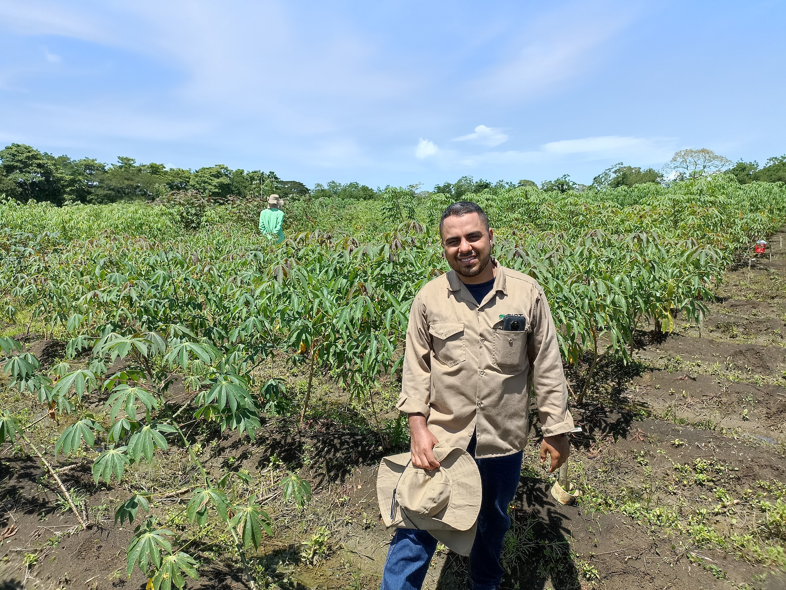
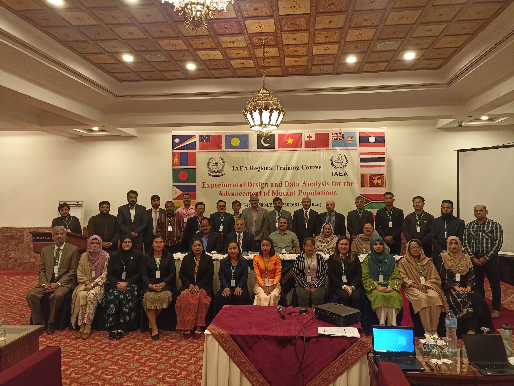
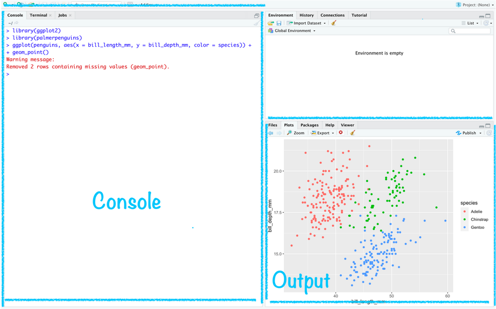
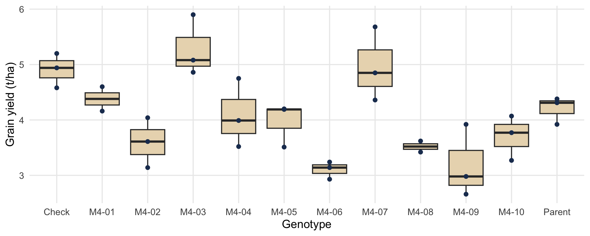
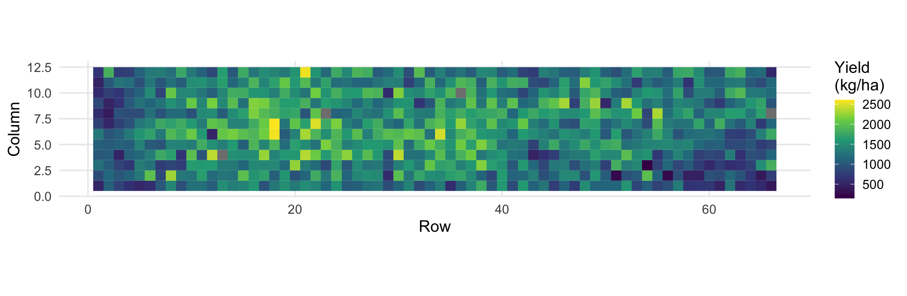
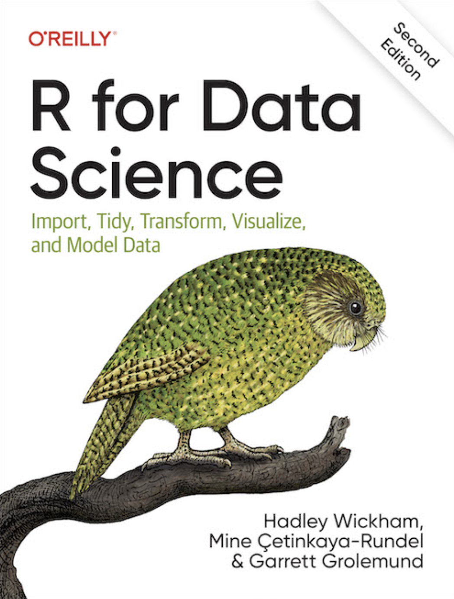

Regional Training Course on Experimental Design and Data Analysis for the Advancement of Mutant Populations (RER5030)
28 October 2026
Luis Fernando Delgado Muñoz, Cali, Colombia
Data Scientist, Cassava Program, Alliance of Bioversity International and CIAT (2022 to 2025)
Postharvest Quality Lab (2020 to 2022): cassava cooking quality and the first sensory panel of the program


In one minute, tell us:
| When | What |
|---|---|
| 28 October, online | Session 1: software setup and R basics (today) |
| 4 November, online | Session 2: tidy data and digital data collection apps |
| 9 to 13 November, Skopje | Week 1: field data, designs, ANOVA, mixed models, spatial analysis, imaging, G×E, machine learning |
| 16 to 20 November, Skopje | Week 2: analysis pipeline, mutation breeding and your own dataset |
The goal: at the end you analyse your own data and present a selection decision supported by statistics.
| Activity |
|---|
| Introductions |
| Block 1. Installation check |
| Blocks 2 to 5. R concepts with plant breeding examples |
| Live coding in RStudio with the course data |
| Homework and questions |
Installation check
Something failed? Write the error message in the chat. We solve it together after the session or on Day 1 at 08:00 (installation help desk).
The script prints OK or FAILED for each package. The first installation can take 10 to 20 minutes.
A plant breeding analogy:
| Command | Analogy | How often |
|---|---|---|
install.packages("dplyr") |
buying the seed | once per computer |
library(dplyr) |
sowing it in this season’s trial | every R session |
For computers with less than 4 GB of RAM or wit non administrator rights:
source("R/install_packages.R")The free plan has limited memory and hours per month: enough for the course exercises, but it needs a stable internet connection.
48 hours/month with 32 GB RAM, reset at midnight UTC.
R and RStudio
FielDHub: field designs and layoutslme4, emmeans: mixed models, BLUEs and BLUPsSpATS: spatial analysis of trialsmetan, statgenGxE: G×E and stabilitypliman: image analysis of plantsFrom field to decision in one script:
Plant breeding is increasingly data-driven, leveraging multi-environment trials, genomic selection, QTL mapping, and mating designs like diallels and line × tester analyses.
R has emerged as an essential platform for breeders offering robust analytics, visualization, and reproducible workflows.
This document presents the top 10 R packages for plant breeding, including tools for correlations, heatmaps, plots, and regression trends in research.

Write your code in a script (File, New File, R Script) and run a line with Ctrl + Enter (Windows) or Cmd + Enter (macOS).
The most common error for beginners:
Error: cannot open file 'data.csv': No such file or directoryR is looking in the wrong folder. Solution: always work inside an RStudio project.
rtc-course/
├── rtc-course.Rproj
├── data/ # raw data
├── R/ # scripts
└── output/ # tables and figures"data/trial.csv"setwd("C:/Users/maria/Desktop"): it only works on one computerObjects and data structures
Objects store values. Create them with <-:
[1] 4.5Functions do something with objects:
Your own function, for every plot of the trial:
[1] 4.500000 5.166667 3.666667 4.833333Write the calculation once, apply it to all plots: no copying cells as in Excel.
A vector holds values of the same type. Each column of a field book is a vector.
[1] 92.32| Type | Example |
|---|---|
| numeric | 92.5, 88.0 |
| character | "M3-01", "Parent" |
| logical | TRUE, FALSE |
Truncation selection in one line: keep the plants that pass a threshold. Here, 2 of 5 plants (40%) are selected.
A factor is a vector of categories. Genotype, replicate, block, row and column must be factors in a model.
[1] "numeric"[1] "1" "2" "3"If replicate is numeric, an ANOVA estimates one slope (1 degree of freedom) instead of one effect per replicate (2 degrees of freedom). The results are wrong without any error message.
All values of the same type, arranged in rows and columns.
Skopje Bitola Strumica
M4-01 4.1 3.8 4.5
M4-02 3.6 3.9 4.0
Parent 4.4 3.2 4.9 M4-01 M4-02 Parent
4.133333 3.833333 4.166667 Each row is a plot, each column is a variable.
plot rep geno yield
1 1 1 M4-01 4.6
2 2 1 Parent 4.3
3 3 2 Parent 4.1
4 4 2 M4-01 4.9 plot rep geno yield
1 1 1 M4-01 4.6
4 4 2 M4-01 4.9Importing field data
| File | Content | Why we use it |
|---|---|---|
precourse_trial.csv |
10 M4 lines + parent + check, RCBD, 3 reps | Learning the basics |
precourse_trial_eu.csv |
Same data, ; and decimal comma |
European Excel files |
precourse_trial.xlsx |
Same data, Excel | Reading Excel |
Example_Beans.csv |
Real bean trial, 380 lines, 792 plots | Real data problems |
Example_rice.csv |
Rice trial, Latin-1 encoding | Accents and special letters |
Many European versions of Excel save CSV files like this:
"location";"year";"generation";"plot";"rep";...;"yield_t_ha"
"Skopje";2025;"M4";1;1;...;4,6Other combinations: read_delim(file, delim = "\t", locale = locale(decimal_mark = ","))
Rows: 36
Columns: 13
$ location <chr> "Skopje", "Skopje", "Skopje", "Skopje", "Skopje", "S…
$ year <dbl> 2025, 2025, 2025, 2025, 2025, 2025, 2025, 2025, 2025…
$ generation <chr> "M4", "M4", "M4", "M4", "M4", "M4", "M4", "M4", "M4"…
$ plot <dbl> 1, 2, 3, 4, 5, 6, 7, 8, 9, 10, 11, 12, 13, 14, 15, 1…
$ rep <dbl> 1, 1, 1, 1, 1, 1, 1, 1, 1, 1, 1, 1, 2, 2, 2, 2, 2, 2…
$ row <dbl> 1, 1, 1, 1, 1, 1, 1, 1, 1, 1, 1, 1, 2, 2, 2, 2, 2, 2…
$ col <dbl> 1, 2, 3, 4, 5, 6, 7, 8, 9, 10, 11, 12, 1, 2, 3, 4, 5…
$ geno <chr> "M4-01", "M4-10", "M4-06", "M4-02", "Parent", "M4-09…
$ check <chr> "no", "no", "no", "no", "yes", "no", "no", "no", "no…
$ yield_t_ha <dbl> 4.60, 3.77, 3.24, 4.04, 4.31, 3.92, 4.20, NA, 4.75, …
$ plant_height_cm <dbl> 86.3, 93.4, 84.3, 88.8, 96.5, 82.8, 94.0, 85.0, 88.1…
$ days_to_flowering <dbl> 64, 63, 63, 61, 62, 62, 62, 63, 63, 63, 59, 59, 60, …
$ disease_score <dbl> 2, 5, 6, 5, 3, 6, 6, 6, 4, 4, 3, 3, 3, 1, 3, 5, NA, …[1] "Irrigaci\xf3n" "Sequ\xeda" [1] "Irrigación" "Sequía" For names with č, š, ž or ğ saved in Central European Windows, use encoding = "windows-1250". Best solution: save from Excel as CSV UTF-8.
[1] 792 18 DF DPM PLHA POM_c2 SW100 TSW YDHA
0 6 4 0 4 3 4
YDHPL YdHa_clean
4 4 dim()glimpse()colSums(is.na())Data manipulation and a first plot
dplyr| Verb | What it does | Breeding example |
|---|---|---|
select() |
keep columns | keep design columns and yield |
filter() |
keep rows | plots of the parent only |
mutate() |
create columns | yield in kg/ha |
arrange() |
sort rows | rank genotypes by yield |
group_by() + summarise() |
summaries by group | mean yield per genotype |
The pipe |> reads as “and then” (Ctrl/Cmd + Shift + M).
# A tibble: 3 × 4
geno check n yield
<chr> <chr> <int> <dbl>
1 M4-03 no 3 5.28
2 M4-07 no 3 4.96
3 M4-01 no 2 4.38Two of these lines have more than 0.5 t/ha over the parent. Is the difference real or noise? That question is the reason for Days 2 and 3 (ANOVA, Dunnett test and mixed models).
ggplot2data + aesthetics aes() + geometry geom_...()


Patterns in the field are the reason to use blocks (Day 2) and spatial models (Day 4).
Let’s open RStudio
We now run the code of the course manual, chapter 1, step by step with the course data.
Use data/precourse_trial.csv inside an RStudio project:
precourse_trial_eu.csv and check that yield_t_ha is numericdisease_score?Solutions are in the course manual, chapter 1.

Luis Fernando Delgado Muñoz
Luis Fernando Delgado Muñoz | RTC RER5030 | Pre-course Session 1